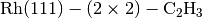
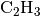
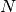
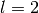
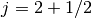
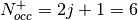
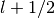
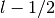
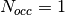
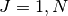

9. APPENDIX I: Barbieri/Van Hove Phase Shift Package - A Brief User Guide¶
A. Barbieri, M.A. Van Hove
Lawrence Berkeley Laboratory, University of California, Berkeley, California 94720, USA
9.1. Acknowledgement notice¶
Please acknowledge use of the Barbieri/Van Hove phase shift package, as:
A. Barbieri and M.A. Van Hove, private communication.
9.2. Contact¶
M.A. Van Hove: vanhove@cityu.edu.hk
9.3. Contents¶
The following files should be included with the Barbieri/Van Hove distribution. If any are missing please contact Michel Van Hove (vanhove@cityu.edu.hk) for replacements.
- phshift2007.rst - This file contains this user guide to use the phase-shifts programs. It should be supplemented with the information contained in the input files provided. Includes definitions of I/O files, contents and basic hints on running the programs.
The files listed below contain FORTRAN programs that correspond to the basic steps necessary to obtain the phase shifts needed in a LEED structural determination.
- PhSh0.for - calculation of the atomic orbital charge densities.
- PhSh1.for - calculation of the muffin tin potential (bulk & slab).
- PhSh2*.for - calculation of phase shifts.
- PhSh3.for - removal of pi jumps from phase shifts.
INPUT-OUTPUT
Contains samples of the input and output files for the case of bulk Rh and a  (H neglected) structure.
- atorbC : input of PhSh0 for C
- atorbRh : input of PhSh0 for Rh
- atC.i : output of PhSh0 for C
- atomic.i : input of PhSh1 for  on Rh(111)
- clusRh : input of PhSh1 for bulk Rh
- clusC2Rh : input of PhSh1 for on Rh(111) (slab)
- ph1 : input of PhSh3 (Rh)
- ph2 : input of PhSh3 (C)
- leedph.d : output of PhSh3 (for on Rh(111))
- Not included are two output files:
- mufftin.d : output of PhSh1 for (MTZ=-1.74)
- phasout : output of PhSh2rel for on Rh(111)
9.4. Overview of the Programs¶
We explain here how to use the PHASE SHIFTS codes to obtain the phase shifts which are needed in a LEED calculation.
This documentation does not try to explain any of the details and subtleties of the calculation, but rather it simply tries to put anybody with a minimum knowledge of basic quantum mechanics in the position of obtaining good phase shifts. Additional documentation is contained as comments within some of the codes (but not all!).
The various codes have been obtained from different authors, whose names can be found in the source codes. The original codes were modified to make them more general and, at input-output level, so as to make their use more straightforward.
The codes have been tested on an IBM RISC 6000 workstation. There is no guarantee that the programs will work correctly when transported to different computers with different FORTRAN compilers.
Basically, the computation of phase-shifts appropriate for a LEED calculation can be divided into several distinct steps:
9.4.1. Step 0: PhSh0.for¶
9.4.1.1. Description¶
First we need to perform a free atom self-consistent calculation for each of the N elements for which phase shifts are required. This is accomplished by using a self-consistent Dirac-Fock (i.e. relativistic approach which computes, separately for each element, the self-consistent atomic orbitals. Notice that no local exchange approximation is made in these codes but some other minor approximations are used; see program for details.
The input needed at this stage is some basic information about the shell structure of the atom under consideration, an example of which is provided in the file ATORB for the case of Rhodium. The information required is usually contained in any advanced Chemistry or Solid State book (e.g. Ashcroft and Mermin, Solid State Physics, Saunders College, 1976).
The orbitals can then be used to compute the total radial charge densities associated to each element, which are collected in the file atomic.i.
9.4.1.2. Files¶
INPUT: atorb
OUTPUT: atelem.i
To summarize, the user will run PhSh0.for for the different inputs atorb1, atorb2, ..... atorbN, corresponding to the  elements of interest and produce the corresponding output atelem1.i, atelem2.i, .... atelemN.i for the charge density of each of the elements.
Note
The occupation number for each level corresponds to the
total number of electrons filling that level. For
instance, in the case of Rh, the orbital 3,2,2,-2.5
has  and . The occupancy of the filled level
is then .
In the case of partially filled orbitals when the atomic
configuration available does not distinguish between
 and  levels, it is customary to assign the
occupancy so that the ratio for the partially filled
orbitals equals the ratio of the occupancies if those
orbitals were completely filled. Consider for instance
the case of Rh where the atomic configuaration (Ashcroft
and Mermin) is [Kr]4 d 8 5 s 1. There is no ambiguity
associated to the 5,0,0,1/2 level and  in that case.
As for the 4,2,2,3/2 and 4,2,2,5/2 levels the ratio of
full occupancies is 4/6 ; the eight 4 d electrons will then be
split among the two levels so as to preserve the 4/6
ratio: hence 3.2/4.8. The sum of all occupancies for a
neutral atom should of course equal  .
.
9.4.2. Step 1: PhSh1.for¶
9.4.2.1. Description¶
Run interactively
Now one computes the muffin tin potential by following Mattheiss’ prescription (Ref. T. L. Loucks, Augmented Plane Waves Method, Benjamin, 1967). In essence, the atomic charge densities of the different elements making up the structure that we are interested in are superimposed to reflect the actual position of these elements in the structure. Note that for the purpose of obtaining the phase shifts needed in a LEED calculation it is not necessary to know the exact position of the atoms in the structure we are interested in, because the phase shifts and hence the calculated intensities are not strongly dependent on the manner in which the phase shifts are produced. (In principle, one could iterate the phase shift calculation after the LEED structure analysis to further refine the structure.) For the substrate atoms, a bulk terminated structure will be sufficient in almost all cases. In general, we prefer using a slab-supercell approach in defining the surface structure rather than embedding the adatoms in a sometimes artificial bulk structure. The slab is a free-standing film with a thickness of a few atomic layers, repeated periodically as a stack of identical slabs separated by slices of vacuum. The main subtlety about the slab approach is related to the definition of the muffin tin zero (see comment 3).
The total potential energy in each muffin-tin sphere is obtained by adding the electrostatic component computed by using the charge density distribution, and a local Slater-like exchange term. The final potential is then shifted to set its zero at the level of the average energy in the interstitial region (Muffin Tin Zero). This part of the program is relatively well documented.
9.4.2.2. Files¶
INPUT:
- cluster.i - Mainly contains the structural information about the slab which will be used to produce the muffin-tin potential. See example provided for a Rh crystal in clusterRh.i and for a surface with H neglected in clusterC2Rh.i.
- atomic.i - It contains the atomic charge densities for the NINEQ inequivalent atoms specified in cluster.i. Furthermore, atomic.i has to be generated from the output atelemJ.i  by appending the atelem* files corresponding to the different elements in the order in which they appear as inequivalent atoms in the file cluster.i
- interactively: question: slab or bulk calculation? answer: 1 (slab) or 0 (bulk) enter value for bmtz (bulk muffin tin zero; see comment 3)
- OUTPUT:
- mufftin.d
- check.o
- bmtz (if bulk calculation)
Note
Cluster.i contains an option for producing output suitable for the three versions of the next step. The value of the alpha constant can be obtained from K. Schwarz, Phys. Rev. B 5, 2466 (1972)
Notice that an atelem.i corresponding to one element might need to be appended more than once to generate atomic.i. For instance in the case of clusterRh.i : atomic.i = atelemRh.i + atelemRh.i + atelemRh.i
In the case of clusterC2Rh.i:
atomic.i = atelemRh.i + atelemRh.i + atelemRh.i + atelemRh.i + atelemC.i + atelemC.i
Where ‘+’ indicates the appending of one file after the other
The specification of the Muffin tin zero requires some care when doing a calculation for a slab. Here by slab we mean a specified geometry in cluster.i with a large vacuum gap between slabs. The computed muffin tin zero (mtz) is the average of the energy in the interstitial region, including the vacuum: the average is highly distorted by the presence of the vacuum. A reasonable value for mtz is the bulk value even in the case of a slab calculation (small errors are anyway adjusted by the fitting of the inner potential in the LEED calculation). Therefore the suggested procedure is the following:
- Perform first a bulk calculation for the substrate with the appropriate input files. When asked whether a bulk or slab calculation input 0 (bulk) and record the output value of bulk mtz
- Perform a second slab calculation (of course now with different input files); input 1 for slab calculation and, when asked, use the previously recorded value as input for bmtz. The output of this second calculation will be used in STEP 2.
Running this step interactively will clarify our points.
9.4.3. Step 2: PhSh2cav.for, PhSh2wil.for & PhSh2rel.for¶
9.4.3.1. Description¶
Here one computes the phase shifts from the muffin-tin potential(s).
An important detail is that, as a function of energy, the calculated phase shifts may, and often do, show discontinuities by ::math::pi, i.e. jumps by ::math::pi at some energies. Since the LEED programs interpolate phase shifts between energies at which they are provided, such discontinuities would give totally erroneous results at such discontinuities. Therefore these discontinuities must be removed: this is done internally in PhSh2wil.for, but separately in PhSh3.for after PhSh2cav.for or PhSh2rel.for is run.
9.4.3.2. Different packages¶
- PhSh2cav.for is a Cavendish program which produces non- relativistic phase shifts (Schroedinger equation), with possible discontinuities in energy.
- PhSh2wil.for is a program, written originally by Williams, which again produces non-relativistic phase shifts (Schroedinger equation), but without continuities in energy. This is the preferred program for non-relativistic phase-shifts calculations.
- PhSh2rel.for computes relativistic phase shifts (Dirac equation), but is possibly discontinuous in energy.
9.4.3.3. Files¶
- INPUT:
- mufftin.d - (as output from STEP 1)
- OUTPUT:
- phasout
- dataph.d
- inpdat
- leedph.d (in wil only)
Note
- Whether one can run the cav, wil or rel version depends on the input NFORM specified in STEP 1 in the input cluster.i.
- The energy range (20-300 eV) for which phase shifts are computed, the energy spacing (5eV) and the number of phase-shifts (13) are set. An easy way to modify these is to use NFORM=2, because the values will appear in an obvious way in the input mufftin.d. Such input (the output of STEP 1) can be edited and the parameters can be modified for each of the inequivalent atoms in the calculation.
- The output phasout contains the phase shifts of all the inequivalent atoms NIEQ (the number of such atoms was specified in cluster.i of STEP 1) in the calculation. phasout will be used to create the input files needed in STEP 3.
- dataph.d is an output of the phase shifts in a form suited to plotting such data.
9.4.4. Step 3: PhSh3.for¶
9.4.4.1. Description¶
Run interactively
The phase shifts produced from phsh2cav.for and phsh2rel.for are not necessarily continuous in energy (since phase shifts are defined modulo pi). phsh3.for makes them continuous and produces output suitable as input for LEED programs. For the output of phsh2wil.for, phsh3.for is used to reformat the phase shifts.
9.4.4.2. Files¶
- INPUT:
- phJ generated from phasout. For this purpose phasout must be split into files each containing phase shifts of a single element. phJ will contain the phase shifts of the J ‘th element in the input file for the LEED programs (i.e. tleed5.i)
- OUTPUT:
- leedph.d
- dataph.d
Note
The actual number of sets of phase-shifts that one might want to use in a LEED calculation might be different from NINEQ. It is quite typical for instance to use a single set of phase shifts to describe substrate atoms in different layers.